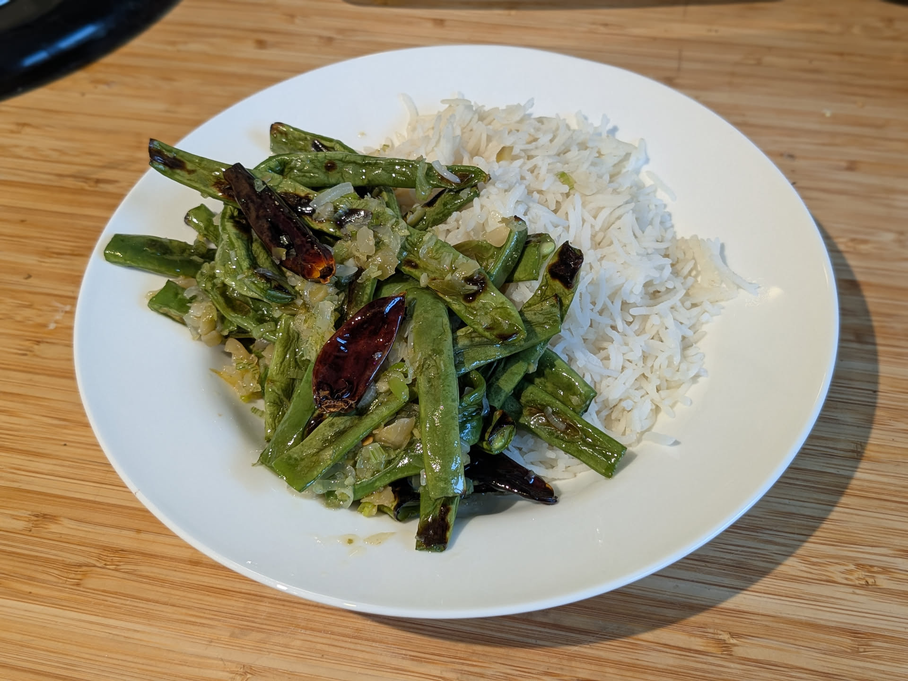

Haricots verts grillés sichuanais

Pour un accompagnement pour 4 personnes, ou un plat pour 2 :
- 500g de haricots verts frais
- Une cuillère à café de poivre de Sichuan
- Six petits piments séchés, de Chine ou bien árbol
- Quatre gousses d'ail
- Un gros oignon frais
- (Facultatif) 40g de yacai ou de zhacai (de la plante de moutarde de Chine fermentée), ou bien une quantité équivalente de kimchi et une demi-cuillère à café de câpres
- Un pouce de gingembre
- Une belle cuillère à café de sucre
- Sel, poivre, huile végétale
- Enlever toutes les graines noires du poivre du Sichuan, ainsi que les graines qui ne sont pas ouvertes, il faut qu'il ne reste que l'enveloppe. Réduire la moitié en poudre au mortier et pilon et la mélanger au sucre, réserver le reste.
- Faire préchauffer le grill du four à puissance maximale. Éplucher et émincer l'ail et le gingembre, laver et émincer l'oignon frais, émincer le yacai.
- Laver, sécher, et équeuter les haricots verts. Les disposer sur une plaque de four recouverte de papier aluminium, saler, poivrer, arroser d'un peu d'huile, et les enfourner pour 3-5 minutes jusqu'à qu'il y ait un peu de noir sur chaque haricot.
- Pendant ce temps, mettre une quantité assez généreuse d'huile dans une poêle avec les piments et les grains de poivre de Sichuan entiers, et faire chauffer à feu moyen. Lorsque ça commence à sentir bon et à grésiller, ajouter l'oignon, l'ail et le gingembre, et faire revenir le tout jusqu'à ce que ça sente bon.
- Mélanger les haricots cuits avec le contenu de la poêle, parsemer du poivre de Sichuan en poudre et du sucre, servir immédiatement.